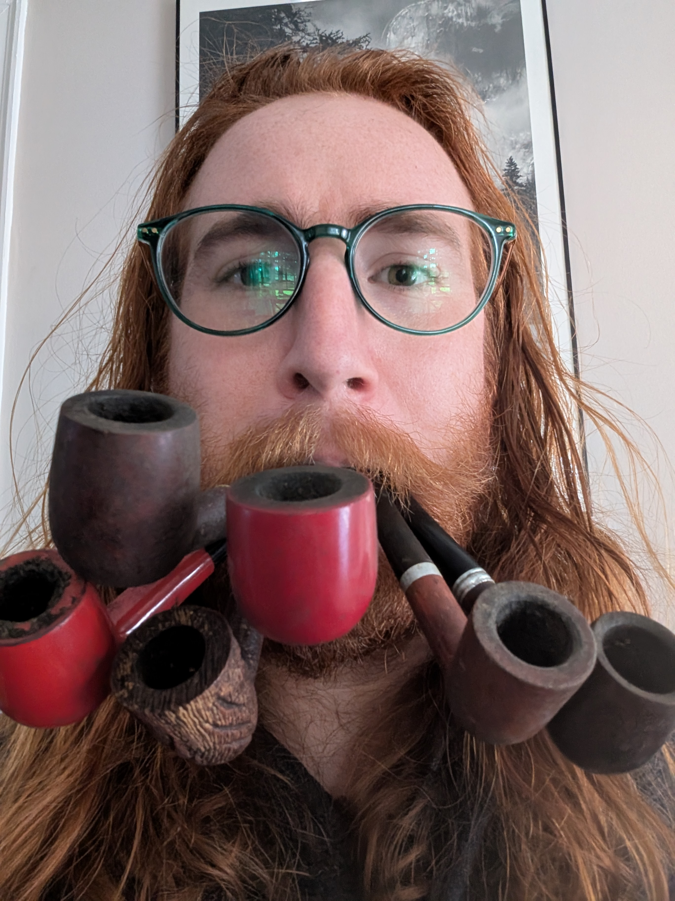

Recently, the company I was working for asked me to get up and move to some cold, mountainless state... or find a new job.
I said no.
And suddenly have all of the time I could want to develop some powerful technical skills I've had my eyes on... and also just to have a whole lot of fun.
A step on that journey is making my own website -- and getting to know a good bit of web-dev in the process, I hope. I will be adding features to the site fairly often, allowing myself to publish things that are ugly... until I know how to make them pretty.
After learning a good bit of web-dev and not enjoying it overly much, I've decided to lean on my buddy Claude AI, though all of the text is mine. At the bottom of every page, I have posted what updates I want to make to improve it as I grow in my web-dev journey.
Thanks for being here!